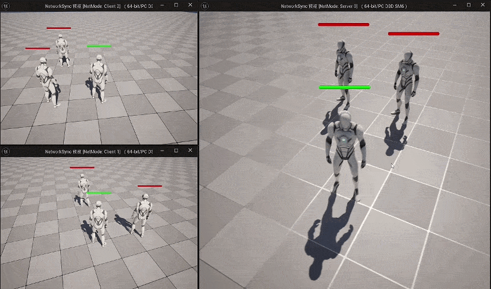
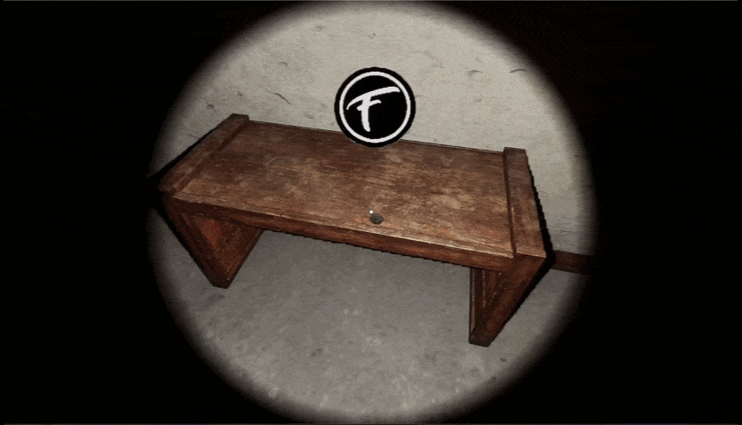
Gameplay · 交互系统
原创解谜项目《祀孽》
- 交互与检视：结构化基类 + 射线检测 + 事件驱动，响应准确率 100%。
- 背包管理：三层分类（固有 / 流程 / 剧情）+ 数据表配置 + 逻辑与表现分离。
- 传送系统：TMap 键值对管理，激活 / 灰度状态，支持无限传送点。
- 场景音效：物理材质识别 + 射线检测，动态播放脚步声，提升沉浸感。
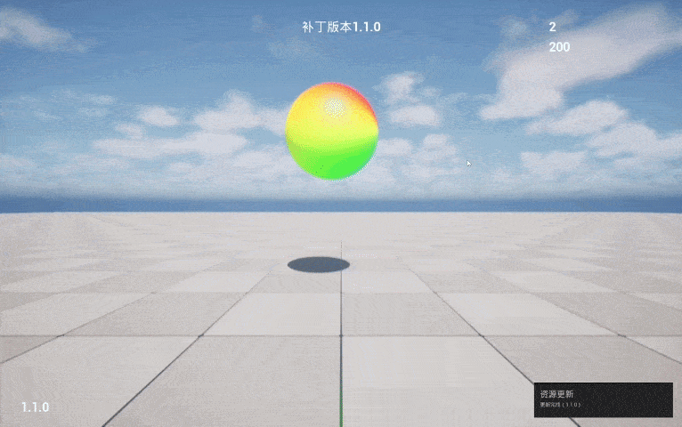
个人 Demo 静态场景性能优化
针对自建 UE5 静态场景的一次完整性能优化：从 stat 数据定位 CPU 渲染提交瓶颈，到阴影、合批、光追三项优化落地，并逐项复测验证收益。
核心成果
79→108
FPS ↑ 36.7%
帧率 FPS
79 → 108
↑ 36.7%
Draw 耗时
12.83 → 9.33 ms
↓ 27.3%
Draws 绘制调用
436 → 198
↓ 54.6%
RHIT 渲染线程
6.73 → 3.91 ms
↓ 41.9%
优化过程
1
基线量化与瓶颈定位
用 stat unit / Stat SceneRendering / Stat InitViews 逐层下钻，确认瓶颈在 CPU 渲染提交侧：Draw 12.83ms ≈ Frame，而 GPU 仅 6.07ms。
2
选择性阴影 + 光照烘焙Draws ↓ 47.2%
Directional Light 改 Stationary，Dynamic Shadow Distance 40000→8000、级联 4→2；小物件关闭 Cast Shadow，大件烘焙阴影并放置 Lightmass Importance Volume。
3
静态网格规范合批图元数 ↓ 64.1%
按「同网格 + 同材质」筛选纯净子集分批生成 ISM/HISM（单批 <200），包围盒过大者按区块拆分，兼顾视锥剔除。
4
关闭 Lumen 硬件光追RHIT ↓ 41.9%
Stationary 烘焙已能提供优质间接光，关闭硬件光追改用软件追踪，渲染线程绑定压力显著缓解，帧率再提升约 14%。
实测数据
分阶段帧率提升橙色虚线为 90 FPS 目标
90 FPS
基线优化前
阴影优化+12.1%
静态合批+7.5%
关闭硬件光追+14.3%
优化前后关键指标
优化前优化后
帧率 FPS↑ 36.7%
Draw 耗时↓ 27.3%
Draws 调用↓ 54.6%
RHIT (ms)↓ 41.9%
查看完整前后对比数据
| 指标 | 优化前 | 优化后 | 提升幅度 |
|---|---|---|---|
| 帧率 FPS | 79 | 108 | +36.7% |
| Frame 帧时间 (ms) | 12.84 | 9.19 | -28.4% |
| Draw 耗时 (ms) | 12.83 | 9.33 | -27.3% |
| RHIT (ms) | 6.73 | 3.91 | -41.9% |
| GPU Time (ms) | 6.07 | 4.84 | -20.3% |
| Draws 总绘制调用 | 436 | 198 | -54.6% |
| DrawPrimitive Calls | 537.2 | 258.13 | -51.9% |
| Triangles Drawn | 101K | 55.6K | -44.9% |
| Processed Primitives | 2485 | 891 | -64.1% |
| Visible Raytracing Primitives | 1912 | 610 | -68.1% |
相关技能
C++ / Slate
网络同步
服务端权威
资源热更（Pak）
渲染性能优化
工具链
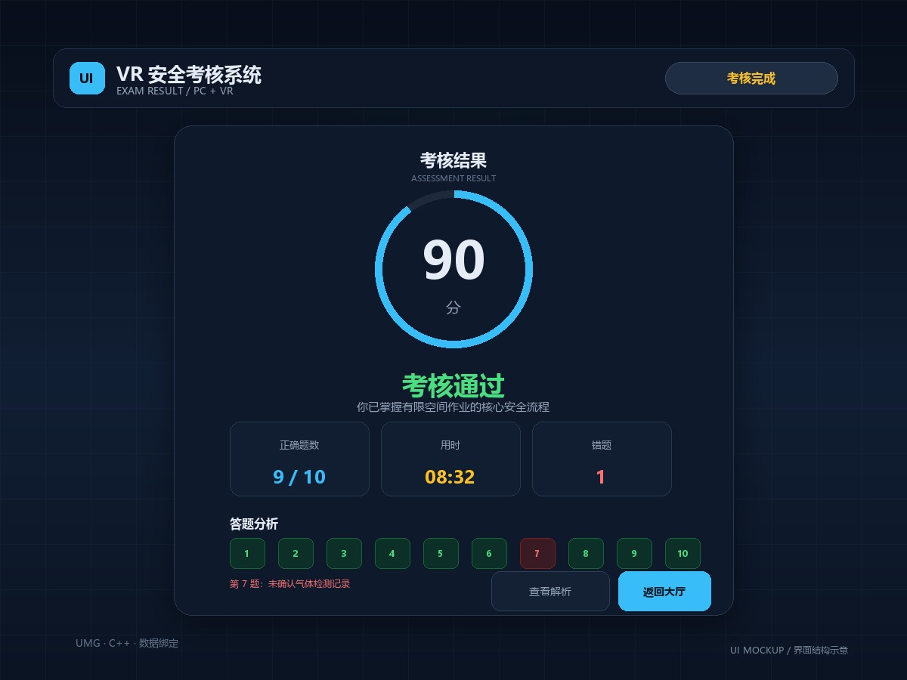
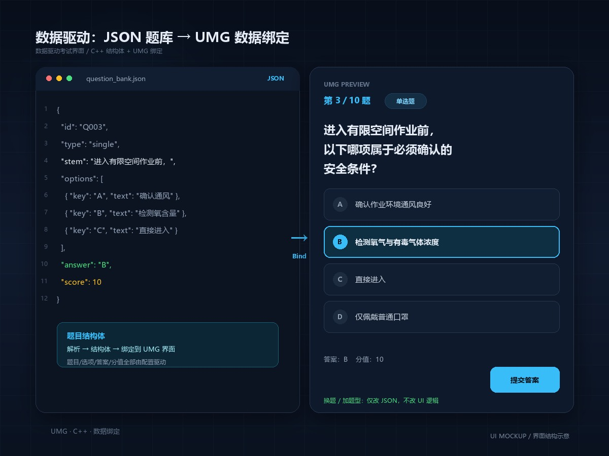
实习项目
VR / PC 考试界面系统
- 数据驱动：从 JSON 文件读取题库 → C++ 结构体 → UMG 数据绑定，换题 / 加题型不改 UI 逻辑。
- 多层级页面：用页面切换与叠加容器组织登录、答题、交卷、结果，状态机统一管理流程。
- 解耦与适配：事件分发 + 锚点 / DPI 缩放，修复 UI 状态丢失、引用拷贝等 10+ 问题。
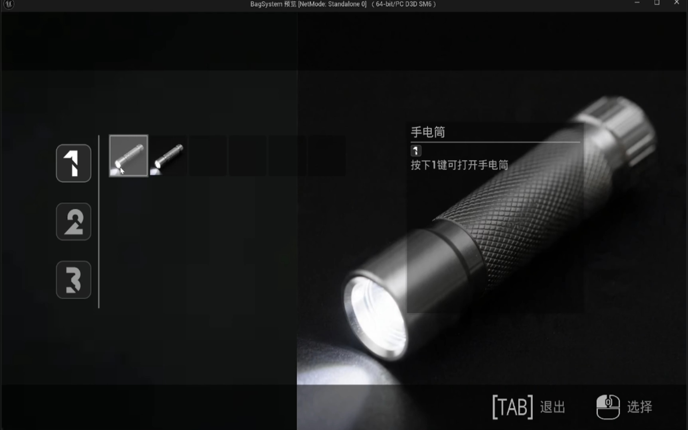
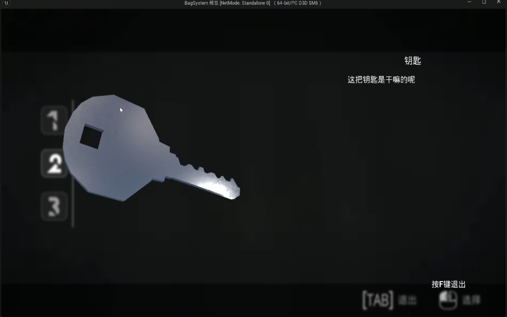
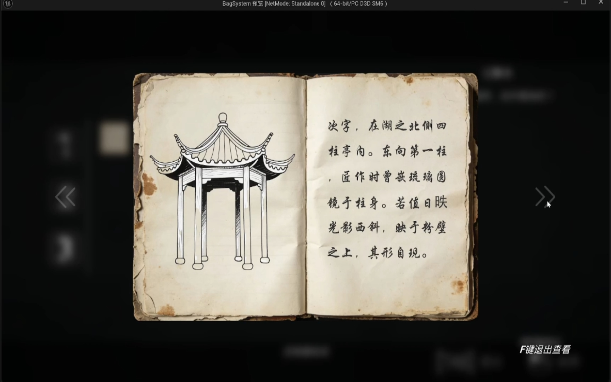
自研解谜项目
背包与物品 UI 系统
- 数据驱动分类：用 DataTable 与 Struct 管理关键物品、线索文档和可使用物品，按类型维护三个分类数组；新增物品只改数据表。
- 动态槽位与详情：WidgetSwitcher + WrapBox 组织三类物品，刷新时动态生成槽位、隐藏空槽；悬停刷新详情，左键弹出菜单。
- 3D 检视与输入闭环：场景捕获 → 渲染纹理 → UI 材质显示模型，支持旋转 / 缩放 / 复位；四态输入管理，Tab 开关背包。
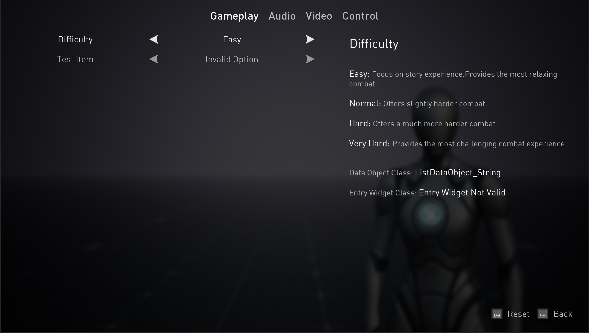
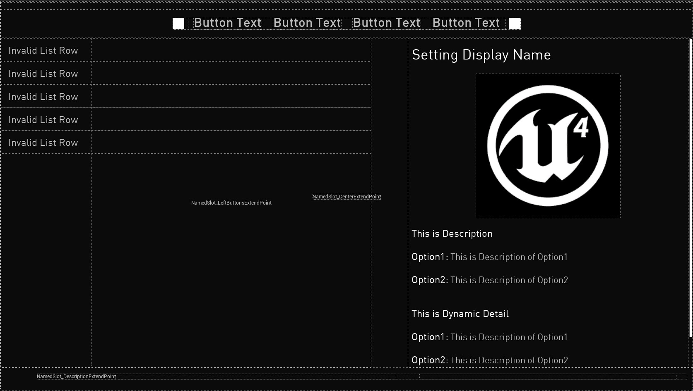
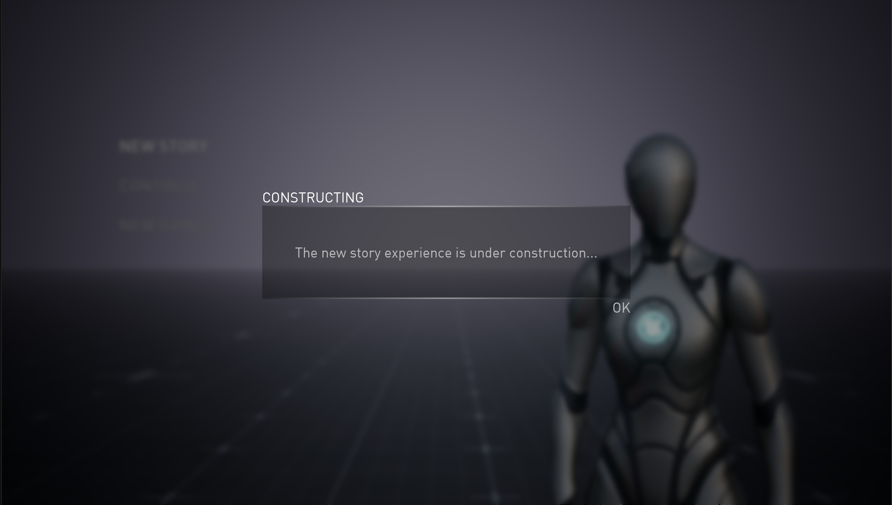
静态场景性能优化 · UI 视角
从 stat 数据定位 CPU 渲染提交瓶颈，到阴影、合批、光追三项优化落地并复测。案例中的 Draw Call / 合批 / 层级分析，同样适用于 UMG 图集与 UI 性能排查。
核心成果
79→108
FPS ↑ 36.7%
帧率 FPS
79 → 108
↑ 36.7%
Draw 耗时
12.83 → 9.33 ms
↓ 27.3%
Draws 绘制调用
436 → 198
↓ 54.6%
RHIT 渲染线程
6.73 → 3.91 ms
↓ 41.9%
优化过程
1
基线量化与瓶颈定位
用 stat unit / Stat SceneRendering / Stat InitViews 逐层下钻，确认瓶颈在 CPU 渲染提交侧：Draw 12.83ms ≈ Frame，而 GPU 仅 6.07ms。
2
选择性阴影 + 光照烘焙Draws ↓ 47.2%
Directional Light 改 Stationary，Dynamic Shadow Distance 40000→8000、级联 4→2；小物件关闭 Cast Shadow，大件烘焙阴影并放置 Lightmass Importance Volume。
3
静态网格规范合批图元数 ↓ 64.1%
按「同网格 + 同材质」筛选纯净子集分批生成 ISM/HISM（单批 <200），包围盒过大者按区块拆分，兼顾视锥剔除。
4
关闭 Lumen 硬件光追RHIT ↓ 41.9%
Stationary 烘焙已能提供优质间接光，关闭硬件光追改用软件追踪，渲染线程绑定压力显著缓解，帧率再提升约 14%。
实测数据
分阶段帧率提升橙色虚线为 90 FPS 目标
90 FPS
基线优化前
阴影优化+12.1%
静态合批+7.5%
关闭硬件光追+14.3%
优化前后关键指标
优化前优化后
帧率 FPS↑ 36.7%
Draw 耗时↓ 27.3%
Draws 调用↓ 54.6%
RHIT (ms)↓ 41.9%
查看完整前后对比数据
| 指标 | 优化前 | 优化后 | 提升幅度 |
|---|---|---|---|
| 帧率 FPS | 79 | 108 | +36.7% |
| Frame 帧时间 (ms) | 12.84 | 9.19 | -28.4% |
| Draw 耗时 (ms) | 12.83 | 9.33 | -27.3% |
| RHIT (ms) | 6.73 | 3.91 | -41.9% |
| GPU Time (ms) | 6.07 | 4.84 | -20.3% |
| Draws 总绘制调用 | 436 | 198 | -54.6% |
| DrawPrimitive Calls | 537.2 | 258.13 | -51.9% |
| Triangles Drawn | 101K | 55.6K | -44.9% |
| Processed Primitives | 2485 | 891 | -64.1% |
| Visible Raytracing Primitives | 1912 | 610 | -68.1% |
相关技能
UMG / Common UI
图集 Atlas
Draw Call / Overdraw
Widget Stack
数据绑定